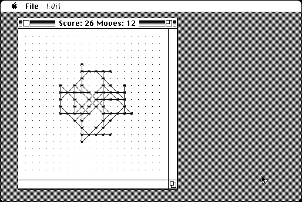

Download
morpion-100.zip (25K) Morpion 1.0.0d2 repackaged into a zipped hfs disk image and checksum file. The disk image can be mounted with Mini vMac.
morpion-100.sit (20K) Morpion 1.0.0d2 in the original format.
copyright: Peter N. Lewis
mod date: Dec 3, 1993
license: freeware
from url :
Stairways Files
A game, designed by Henri Lamiraux, where the goal is to draw as many line segments as possible. for "System 6 or 7". Source code is available.

Download source code
morpion-10-source.zip (41K) Morpion 1.0.0d2 Source repackaged into a zipped hfs disk image and checksum file. The disk image can be mounted with Mini vMac.
morpion-10-source.sit (41K) Morpion 1.0.0d2 Source in the original format.
If you find these downloads useful, please consider helping the Gryphel Project, which hosts them.
Here are the md5 checksums for the downloads, signed with Gryphel Key 5:
--------- GRY SIGNED TEXT --------- d7d80ff254dfc557f736db582eaa2a0c morpion-100.zip abbe48b62703ad85b894ffc8f3f322b5 morpion-100.sit 5cd9841f67e49351fb25969471a61e0f morpion-10-source.zip ce98d2cc3253456378d7c4658fda0cad morpion-10-source.sit ------- BEGIN GRY SIGNATURE ------- Gry/4Xa8CFcUzxdN/HDi1GeYm/7xdEv53sLC5mnBqDUusPITT3UBGaqEUedJG/c5 q0gLFA+cxamIgG0AEJ0siN0ibBPzuCZagPRbdbO3WrHCvkQnye3hhZ1XcmH61CIL 7LWOEbI/6vQVD/xDv4HF2CYFcR4SR8vnaJW4DQ3WEHfncv0jDokkJS5bw+8BxDX3 -------- END GRY SIGNATURE --------